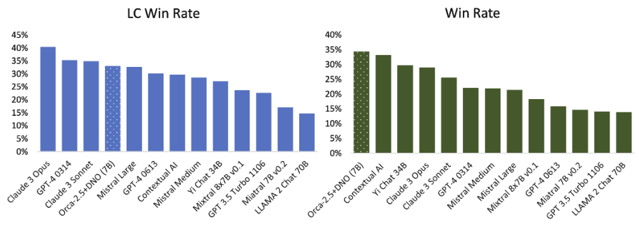

14 Style and Information
- Why “it just changes style” undersells RLHF’s value
- How a language model’s style affects both user experience and benchmark scores
- Balancing chattiness of models
Early developments in RLHF gave it a reputation for being “just style transfer” or other harsh critiques on how RLHF manipulates the way information is presented in outputs. This chapter explains why style is core to understanding the value RLHF provides — and why it positively impacts both model capability and user experience.
The idea of RLHF being solely about style transfer has held back the RLHF narrative for two reasons. The first is how RLHF became associated with small, unimportant changes to the model. When people discuss style transfer, they don’t describe this as being important or exciting – they think of it as superficial. Yet, style is a never-ending source of human value; it’s why retelling stories can result in new bestselling books (such as Sapiens), and it is a fundamental part of continuing to progress our intellectual ecosystem. Style is intertwined with what the information is.
The second reason is that many people missed the fact that well-done RLHF boosts scores on popular LLM evaluations. We’ve seen how different styles actually can meaningfully improve evaluations with Llama 3 [1]. The Llama 3 Instruct models scored extremely high on ChatBotArena, and it’s accepted as being because they had a more fun personality – they were more succinct and clever than other models of their era. Regardless of the benchmark scores that many LLM users are obsessed with, if RLHF is going to make language models simply more fun, that is delivered value.
Throughout this chapter, the term “chattiness” is used to encompass the growing length of responses from models training with RLHF, but it also encompasses techniques like heavy markdown use, emojis, and formatting the answer in bulleted lists. To ground the discussion in this chapter, an example completion for two models in the same Tülu 3 family are shown below – one with only instruction fine-tuning and the second with preference fine-tuning applied via length-controlled DPO. First, the instruction-tuned completion (the exact model is Llama 3.1 Tulu 3 70B SFT) [2]:
What is reinforcement learning from human feedback?
Reinforcement learning from human feedback, also known as human- in-the-loop reinforcement learning, is a subfield of machine learning where the primary goal is to train reinforcement learning agents to perform tasks by incorporating feedback from humans. This feedback can come in various forms, such as binary rewards (e.g., right or wrong), scalar rewards, preferences between actions, demonstrations, natural language instructions, or corrections to the agent’s behavior. The idea behind reinforcement learning from human feedback is to leverage human intuition and decision-making abilities to guide the learning process of the agent. In traditional reinforcement learning, an agent learns to make decisions by interacting with an environment and receiving rewards or punishments based on the outcomes of those interactions. However, defining a suitable reward function can be challenging and time-consuming, often leading to reward shaping or reward hacking, where the agent finds unexpected and often unintended ways to maximize the reward. By using human feedback, reinforcement learning can address some of these issues by allowing humans to directly influence the learning process. Human trainers can provide real-time feedback, scale their feedback to match the complexity of the task, and update their feedback based on the agent’s progress. This approach can lead to more robust and generalized agents, as they are guided not by handcrafted reward functions but by the nuanced understanding and experience of human trainers. However, reinforcement learning from human feedback faces several challenges, such as the high cost of obtaining human feedback, subjective and inconsistent feedback, scaling issues, and methods for efficient and effective integration of human feedback into learning algorithms. Despite these challenges, the research in this area has shown promising results in various applications, including robotics, video games, prosthetics control, natural language processing, and many more.
And the post RLHF completion from Llama 3.1 Tulu 3 70B DPO:
What is reinforcement learning from human feedback?
Reinforcement learning from human feedback (RLHF) is a subset of reinforcement learning (RL) where the rewards that guide the learning process are provided by humans, rather than a pre-specified numerical reward function. This is particularly useful in situations where it is hard or infeasible to design a suitable reward function, or where the desired performance involves subjective judgments that humans are uniquely equipped to provide. In traditional reinforcement learning, an agent interacts with an environment. With each interaction, the agent performs an action, receives an observation, and gets a numerical reward that tells it how well it performed in that situation. Through many such interactions, the agent learns to maximize the cumulative reward. In contrast, in reinforcement learning from human feedback: 1. **Human Input:** Instead of a predefined reward function, the feedback comes from human evaluators, who provide qualitative, subjective judgments about the agent’s performance. This feedback can be in various forms, such as numerical ratings, binary preference signals, natural language feedback, or even demonstrations showing how to improve. 2. **Feedback Loop:** Human evaluators observe the agent’s actions or outcomes and provide feedback in real-time (or close to real-time). The agent learns through this iterative feedback loop, gradually adapting its behavior to align more closely with human preferences. 3. **Reward Shaping:** Because raw human feedback is not always directly usable in learning algorithms due to variability and potential bias, a reward shaping process may be involved, whereby human feedback is converted into a more stable signal that guides learning. 4. **Preference-based RL:** One common approach within RLHF is preference- based reinforcement learning, where the agent is trained by comparing pairs of actions (or outcomes) and receiving human feedback on which one is better. From these pairwise comparisons, the agent infers a reward function that it can use to guide its actions. 5. **Inverse Reinforcement Learning (IRL):** Another technique used in RLHF is IRL, which aims to infer the underlying reward function that could explain human actions or decisions, and then use that reward function to train the agent. **Applications:** Reinforcement Learning from human feedback has found applications in:
- **Robotics:** Teaching robots to perform tasks that are difficult to specify with predefined reward functions. - **Game playing:** Human feedback can guide AI agents to better emulate human-like strategies or behaviors. - **Language and content generation:** For example, suggestively guiding AI models to generate more coherent, creative, or helpful content. - **Recommendation systems:** Human feedback can help adjust and refine the recommendations provided to users. **Challenges:** Using human feedback introduces some specific challenges: 1. **Scalability:** Human feedback is time-consuming and expensive to collect, and it’s hard to scale to complex or high-dimensional tasks. 2. **Bias and Noise:** Human feedback can be noisy, inconsistent, and biased, leading to suboptimal learning outcomes. 3. **Alignment:** Ensuring that the reinforcement learning agent aligns with the true preferences of the human evaluator(s) and not just the superficial feedback, is difficult. 4. **Safety and Misuse:** There can be concerns about the safety and ethical implications of using potentially flawed human feedback, especially if the feedback process is corrupted or gamed. Researchers are actively working on techniques to mitigate these challenges and improve RLHF approaches. One such approach is leveraging machine learning models to amplify the efficacy of the human feedback, for example, by learning to generalize from sparse human input or by synthesizing plausible feedback in situations where direct human input is not available.
The response from the DPO model has similar information, as both models are trained on the same pretrained base model, but the preference fine-tuning adds more structure, formatting, and of course length, which has been shown repeatedly to be associated with general notions of human preference for language models. For more examples like this, see the completions library associated with this book at https://www. rlhfbook. com/library.
RLHF or preference fine-tuning methods are being used by countless people to boost scores like AlpacaEval and other automatic chat leaderboards (which use LLM-as-a-judge to approximate how helpful, harmless, and honest an agent is across simple conversational tasks), but the massive gains RLHF confers here come without shifting scores proportionally on harder-to-game evaluations like ChatBotArena. The tension is that while RLHF methods give a measurable improvement on these models, that training doesn’t always transfer into performance that people care about. Through the establishment of the RLHF literature, a large swath of models have been released with related methods to boost the “alignment” of a model with RLHF, but they often took it way too far and published evaluation scores that were anywhere from misleading to meaningless.
These RLHF methods motivated by alignment, when done right, make the models easier to work with and more enjoyable. This often comes with clear improvements on evaluation tools like MT Bench or AlpacaEval.
In the fall of 2023, there was a peak in the debate over direct preference optimization (DPO) and its role relative to proximal policy optimization (PPO) and other RL-based methods for preference fine-tuning – the balance of chat evaluations to real world performance was at the center of this (For more technical discussion on the trade-offs, see Chapter 8, Ivison et. al 2024 [3], or this talk, https://youtu. be/YJMCSVLRUNs). The problem is that you can also use techniques like DPO and PPO in feedback loops or in an abundance of data to actually severely harm the model on other tasks like mathematics or coding in a trade for this chat performance.
During the proliferation of the DPO versus PPO debate there were many papers that came out with incredible benchmarks but no model weights that gathered sustained, public usage because these models were not robust in general usage. When applying RLHF in the fall of 2023 or soon after, there is no way to make an aligned version of a 7 billion parameter model actually beat GPT-4 across comprehensive benchmarks (this sort of comparison will hold, where small models of the day cannot robustly beat the best, large frontier models). It seems obvious, but there are always papers claiming these sort of results. fig. 14.1 is from a paper called Direct Nash Optimization (DNO) that makes the case that their model is state-of-the-art or so on AlpacaEval for 7B models in April 2024 [4]. For context, DNO is a batched, on-policy iterative alternative to reward-model+PPO (classic RLHF) or one-shot DPO that directly optimizes pairwise preferences (win-rate gaps) by framing alignment as finding a Nash equilibrium against a preference oracle. These challenges emerge when academic incentives interface with technologies becoming of extreme interest to the broader society.

Even the pioneering paper Self Rewarding Language Models from January of 2024 [5] disclosed unrealistically strong scores on Llama 2 70B. At the time, of course, a 70B model can get closer to GPT-4 than a 7B model can (as we saw with the impressive Llama 3 releases in 2024), but it’s important to separate the reality of models from the claims in modern RLHF papers. These models are tuned to narrow test sets and do not hold up well in real use versus the far larger models they claim to beat. Many more methods have come and gone similar to this, sharing valuable insights and oversold results, which make RLHF harder to understand.
A symptom of models that have “funky RLHF” applied to them has often been a length bias. This got so common that multiple evaluation systems like AlpacaEval and WildBench both have linear length correction mechanisms in them. This patches the incentives for doping on chattiness to ‘beat GPT-4’ or the leading frontier model of the day, and creates a less gamified dynamic where shorter, useful models can actually win.
Regardless, aligning chat models only for chattiness now has a bit of a reputational tax associated with it in the literature, where it’s acknowledged that these narrow methods can harm a model in other ways. This note from the original Alibaba Qwen models in 2023 is something that has been observed multiple times in early alignment experiments, exaggerating a trade-off between chattiness and performance [6].
We pretrained the models with a large amount of data, and we post-trained the models with both supervised fine-tuning and direct preference optimization. However, DPO leads to improvements in human preference evaluation but degradation in benchmark evaluation.
An early, good example of this tradeoff done right is a model like Starling Beta from March of 2024 [7]. It’s a model that was fine-tuned from another chat model, OpenChat [8] (which was in fact trained by an entire other organization). Its training entirely focuses on a k-wise reward model training and PPO optimization, and moves it up 10 places in ChatBotArena. The average response length of the model increases, but in a way that’s good enough to actually help the human raters. Later examples, such as Olmo 3, actually are documented as undergoing substantial chat training, but where the authors prefer a final model checkpoint with higher math, coding, and reasoning scores instead of potential checkpoints that’re highest on LLM-as-a-judge based chat benchmarks [9].
A natural question is: Why does RLHF make model responses longer? Fundamentally, evaluations like ChatBotArena have shown us that average users of models often like longer, complete answers when compared with terse responses. Longer answers can feel more thorough, helpful, or even trustworthy to users evaluating them quickly. This does not represent the preference of every user, but these models are trained to match the average preferences of many data labelers, so RLHF tends to make models more verbose.
[1]A. Dubey et al., “The llama 3 herd of models,” arXiv preprint arXiv:2407.21783,
2024.
[2]N. Lambert et al., “Tulu 3: Pushing frontiers in open language model post-training,” arXiv preprint arXiv:2411.15124, 2024.
[3]H. Ivison et al., “Unpacking DPO and PPO: Disentangling best practices for learning from preference feedback,” in Advances in neural information processing systems
(NeurIPS), 2024.
[4]C. Rosset, C.-A. Cheng, A. Mitra, M. Santacroce, A. Awadallah, and T. Xie, “Direct
nash optimization: Teaching language models to self-improve with general
preferences,” arXiv preprint arXiv:2404.03715, 2024.
[5]W. Yuan et al., “Self-rewarding language models,” in Annual meeting of the
association for computational linguistics (ACL), 2025. Available: https://arxiv.
[6]J. Bai et al., “Qwen technical report,” arXiv preprint arXiv:2309.16609, 2023.
[7]B. Zhu et al., “Starling-7b: Improving helpfulness and harmlessness with rlaif,” in
First conference on language modeling, 2024.
[8]G. Wang, S. Cheng, X. Zhan, X. Li, S. Song, and Y. Liu, “Openchat: Advancing open-source language models with mixed-quality data,” in International conference on
learning representations (ICLR), 2024.
[9]T. Olmo et al., “Olmo 3.” 2025. Available: https://arxiv. org/abs/2512. 13961